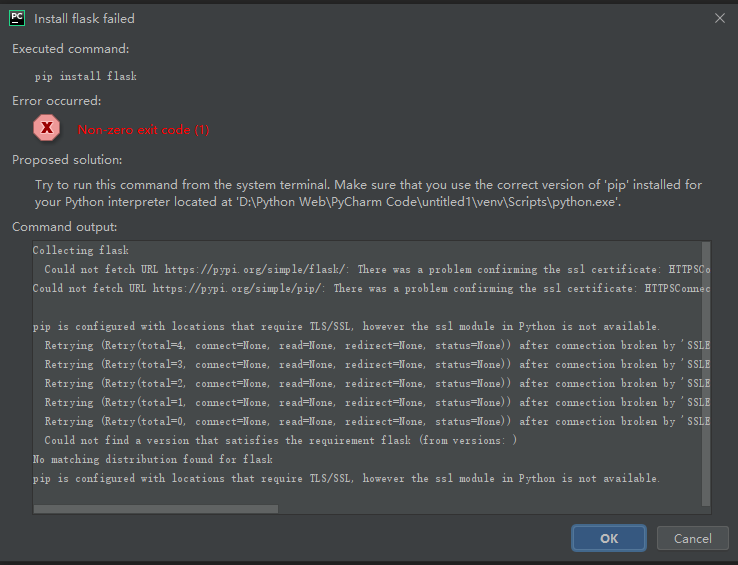
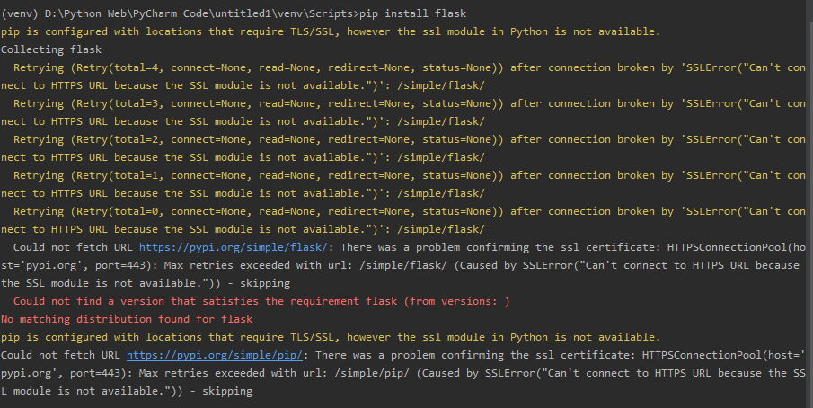
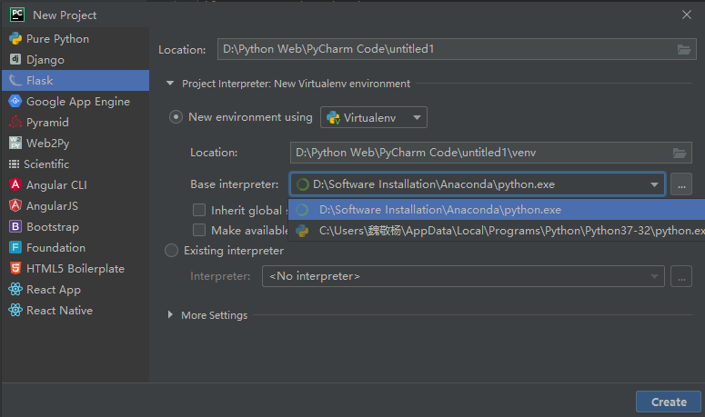

在这篇博文里，我简单地叙述了我在使用PyCharm创建一个flask项目时遇到的问题，以及我解决这个问题的过程。其中比较值得注意的点有：①PyCharm创建新项目时的解释器配置②Python虚拟环境的创建等。
一、问题描述
在pyCharm中创建flask项目时，在建立好虚拟环境，开始自动用pip工具安装flask的时候，软件提示：Install flask failed。如图所示：

我的PyCharm 版本为2019.2.3专业版（是用教育邮箱白嫖的，感谢JetBrains）。
并且，我在我常用的Python的全局解释器中从没遇到过pip失效的问题！
二、解决
㈠【失败一（可以直接跳过）】按照错误提示中的"Proposed solution"来试了试
①打开PyCharm中的终端，用 cd 命令进入到 项目文件夹\venv\Scripts 中，打开activate.bat 文件。手动激活PyCharm为这个项目配置的虚拟环境。
②试试 pip install flask ,结果如下图所示，其实和之前的错误提示一摸一样。

③再试试用pip安装一下其他的东西，结果和上一步一样
④再试试用PyCharm创建一个Django项目，结果在自动使用 pip install django 时，出现了第二步同样的问题。
⑤可以初步得出结论：在这个虚拟环境中，pip失效了！至于为什么失效，错误提示中写的是：pip配置了需要tls/ssl的位置，但是python中的ssl模块不可用。说实话，我不太明白。
㈡【成功解决】在创建新项目时选择一下解释器是基于谁创建的
由于目前实在是不懂ssl这些，又感觉网上一些博客里边谈的东西太玄乎，我就想着直接干脆一点，把PyCharm创建的虚拟环境给换掉试试。
当我再次尝试创建一个新的flask项目时，我多留意了一下创建时可选的一些配置，my god，我感到有些崩溃，原来~~~PyCharm创建的这个虚拟环境默认是根据我暂时没怎么用的anaconda中的来的。

当我把 Based Interpreter 改为我的常用Python解释器（从python官网安装）的时候，项目便创建成功了，啥问题也没发生！
常常，人们在迷迷糊糊的时候感到肚子有点不舒服，一心忙着寻医问药，而不知道原来是自己忘记了而肚子饿了。
㈢总结
①我成功的解决了我当下的问题，对于anaconda中的python解释器的毛病我是真的一窍不通，不过，好在目前我也没必要去了解得那么细。
②当用Python用得多了的时候，系统里很容易存在多个python解释器，这时候自己很容易被搞糊涂。我的建议是：在系统的环境变量中只配置自己最常用的那一个解释器所在的目录，并将其作为一个全局解释器，在其他地方需要单独的python解释器的时候，使用虚拟环境（可以用vitutual或pypenv等工具手动创建，也可以用PyCharn这类集成开发环境在创建项目时自动创建，不过不管是在哪里创建，都一定得注意要基于一个可靠的Python解释器创建！）。
③在PyCharm的新项目创建时，是可以对本项目即将使用的解释器进行配置的，可以选择：⑴新建虚拟环境的python解释器的存放位置 ⑵基于哪个解释器来新建虚拟环境的python解释器 ⑶使用已经存在的虚拟环境的解释器 ......